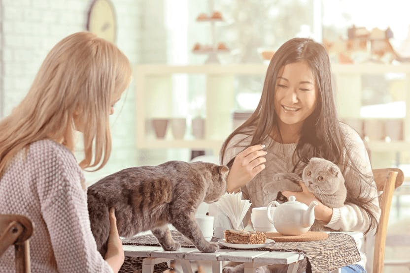
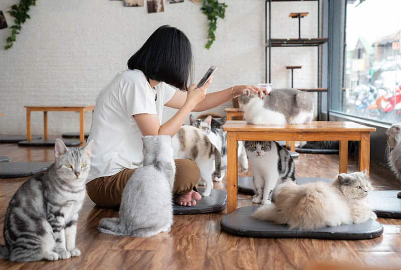
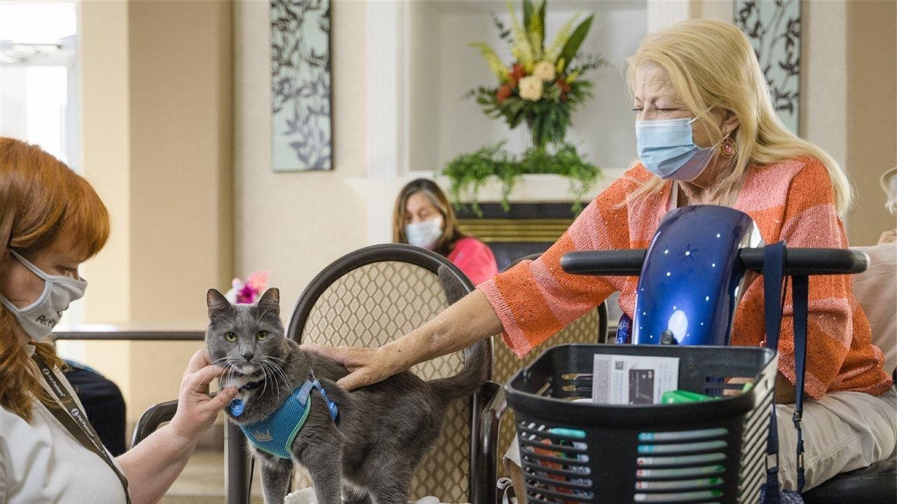

5 Cat Café Etiquette Rules Every Visitor Should Know

Before you visit your first cat café, here are some essential do's and don'ts to keep the feline residents happy and safe. Learn how to approach, interact, and respect their space for a purrfect visit...
[Read More]
Budget Bites: Cheap & Cheerful Cafés Near Manila

Love coffee but your wallet doesn't? We've sniffed out the most affordable and cozy spots around Metro Manila where you can get your caffeine fix without breaking the bank...
[Read More]
The Therapeutic Purr: Using Feline Friends for Stress Relief

Studies show that interacting with cats can lower blood pressure and reduce stress. Discover simple techniques to maximize the calming effects of a cat visit and truly unwind...
[Read More]